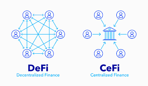

Published on March 28, 2025 | By Admin
The financial industry is undergoing a massive transformation with the rise of **Decentralized Finance (DeFi)**. But how does DeFi compare to **Traditional Banking**, and which one is better for users?
**Decentralized Finance (DeFi)** refers to financial services that run on **blockchain technology**, eliminating intermediaries like banks. With DeFi, users can lend, borrow, and trade assets using smart contracts.
Traditional banking relies on centralized institutions such as commercial banks and government regulations to provide financial services. It requires strict identity verification and involves third-party control over assets.
| Feature | DeFi | Traditional Banking |
|---|---|---|
| Control | User-controlled (No banks) | Bank-controlled |
| Transparency | Public blockchain | Private & restricted |
| Access | Global, no restrictions | Requires ID verification |
| Fees | Lower fees | Higher fees |
| Security | Smart contract-based | Bank security & regulations |
- **DeFi** is ideal for those who want complete control over their finances without third-party involvement. - **Traditional Banking** is safer for those who prefer regulated institutions and financial protection. - **The Future**: DeFi is evolving, and some banks are integrating blockchain-based solutions.
Get the latest updates straight to your inbox.